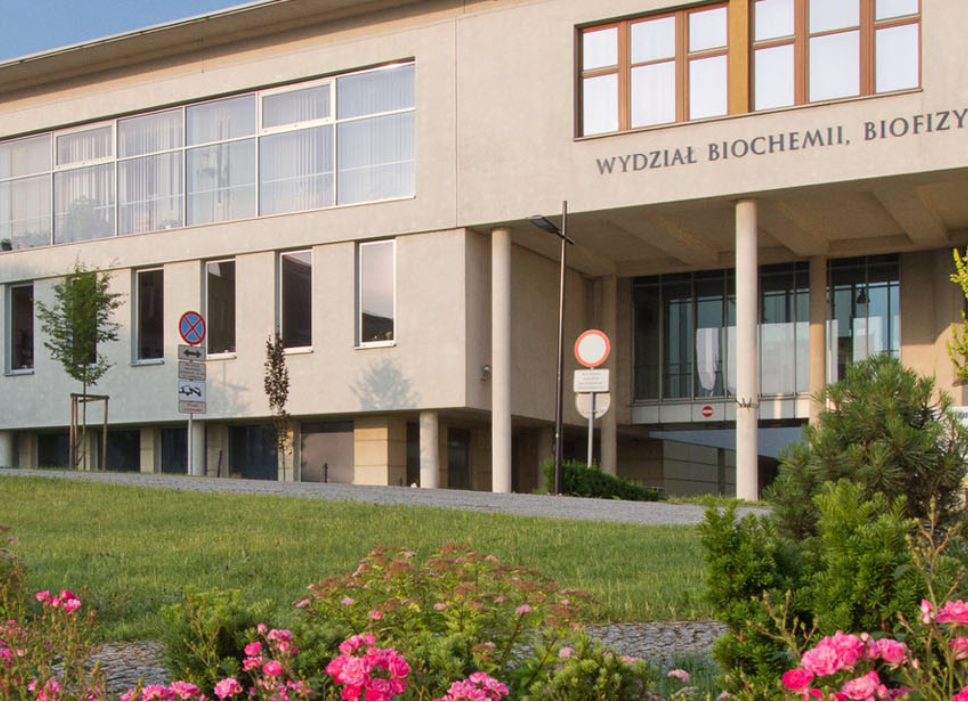
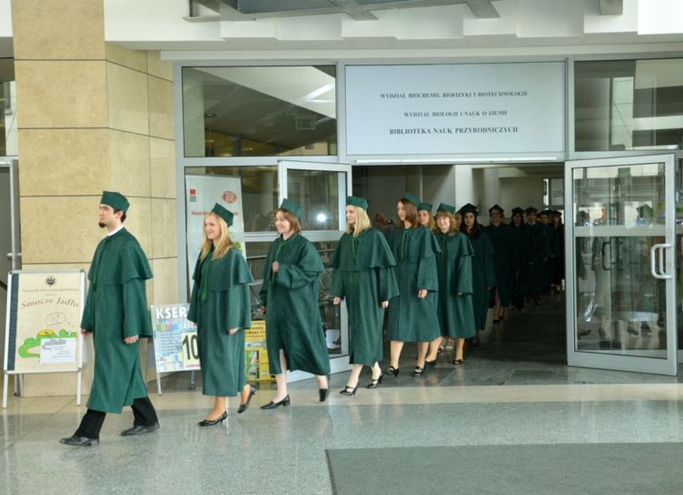
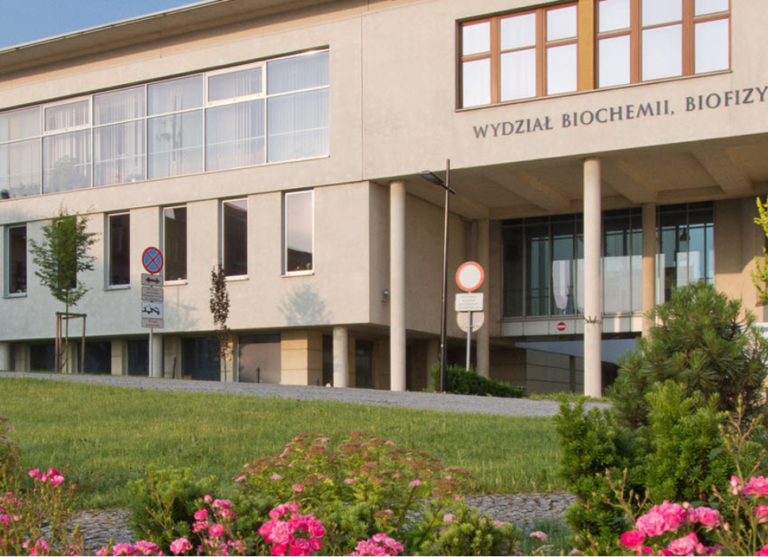
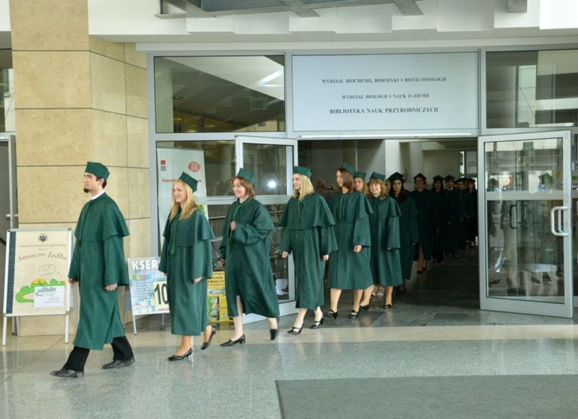

Wydział Biochemii, Biofizyki i Biotechnologii UJ
Wydział Biochemii, Biofizyki i Biotechnologii Uniwersytetu Jagiellońskiego w Krakowie jest
nowoczesnym ośrodkiem badawczym i dydaktycznym, który zajmuje czołowe miejsce w naukach
biologicznych w Polsce. Powstał jako odpowiedź na dynamiczny rozwój biotechnologii oraz
biochemii i biofizyki, oferując interdyscyplinarne programy nauczania i badań.
Wydział skupia wybitnych naukowców, których badania przyczyniają się do zrozumienia procesów
życiowych na poziomie molekularnym. Studenci mają dostęp do nowoczesnych laboratoriów oraz
uczestniczą w projektach badawczych, które odpowiadają na wyzwania w medycynie, ochronie
środowiska i biotechnologii. Wydział współpracuje z wieloma instytucjami naukowymi i przemysłowymi
na całym świecie, wspierając rozwój nauk biologicznych i ich zastosowania praktyczne.
Jest to miejsce, gdzie tradycja naukowa łączy się z innowacjami w nauce i technologii.
 


